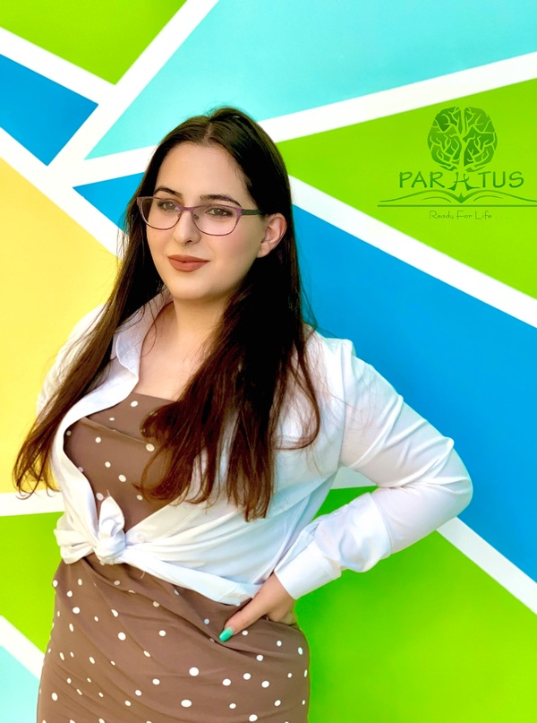
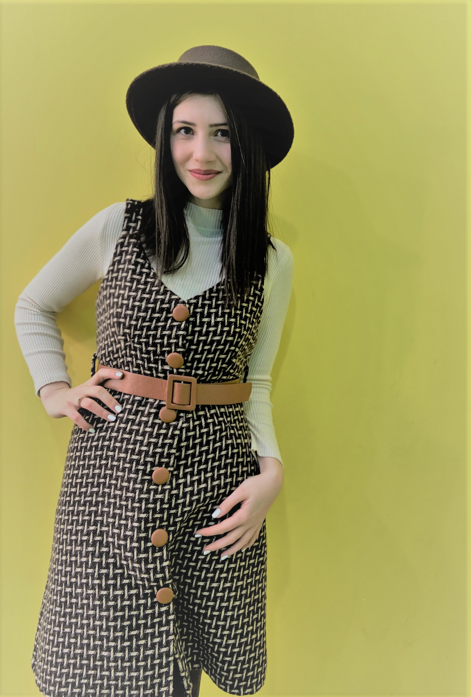

-

Միսս Վարդ
Միսս Վարդուհին չնայած իր երիտասարդ տարիքին կուտակել է այնպիսի փորձ ու հմտություններ, որոնք արժանի են լուսաբանման։
Ընկեր Վարդուհին ՝ Բարձրագույն կրթությունը ստացել է ՇՊՀ-ի անգլերեն լեզվի և գրականություն բաժնում, վերջինս ավարտելով՝ ստացել գերազանցության դիպլոմ📕
2019 թվականին ուսանողական փոխանակման ծրագրով եղել է 7 երկրի առաջավոր համալսարաններում🌎
Չեխիայում մասնակցել է Forum 2000 միջազգային կոնֆերանսին
Խորվաթիայում արժանացել է Youthpass միջազգային սերտիֆիկատի 🤩
Հեղինակ է 2 գիտական հոդվածի, որոնցից մեկը՝ The Impact of Coronavirus on English Word-stock թեմայով տպագրվել է Լոս Անջելեսում Միջազգային Scholink Պարբերականի Education, Societyand Human Studies ամսագրի 2-րդ հատորի 1-ին համարում:
Մինչ այժմ նախագահում է ՇՊՀ ուսանողական գիտական ընկերությունը։
2021 թվականից համարվում է Պարատուս թիմի անդամ։😍
💥 Իսկ թե մեծերին սովորեցնելու ի՞նչ հատուկ մեթոդներ է կիրառում Միսս Վարդը կհամոզվեք ինքներդ, եթե մեկ անգամ մասնակցեք մեր անգլերենի դասերին
@Vi Mour -

Միսս Սիրանուշ
Ընկեր Սիրանուշը մեր ամենաժպտերես և հոգատար ուսուցիչներից մեկն է։ 😇
Ընկեր Սիրանուշը`
✅ Միջին մասնագիտական կրթությունը ստացել է ՇՊՀ֊ի քոլեջի Թարգմանություն բաժնում,
✅ Բարձրագույն կրթությունը` ՇՊՀ֊ի Անգլերեն լեզու և գրականություն բաժնում,
✅ 2019 թ. վերապատրաստվել է որպես երիտասարդական աշխատող։
2021 թվականից համարվում է Պարատուս թիմի անդամ։😍
Սիրում է աշխատել փոքրիկների հետ։ 💛 Իր դասերը մշտապես անցնում են ինտերակտիվ ու հետաքրքիր մեթոդներով։ 👀 Վստահեցնում եմ,որ Միսս Սիրանուշի հետ երբեք չես ձանձրանա։🤩.
@Siran Khachatryan -

Ընկեր Շուշաննա
✅ Միսս Շուշանը բարձրագույն կրթությունը ստացել է ՇՊՀ-ի անգլերեն լեզվի և գրականություն բաժնում, վերջինս ավարտելով՝ ստացել գերազանցության դիպլոմ:
✅Եղել է անգլերենի ոչ ֆորմալ ակումբների ակումբավար, որոնց նպատակն է եղել անգլերենով շփման և հաղորդակցման հմտությունների զարգացումը:
✅ Ջինիշյան հիմնադրամում «Այլընտրանք »կրթական ծրագրի ղեկավար կազմի անդամ է եղել, որը զբաղվել է Ted_Ed կրթական վիդեո հոլովակների թարգմանությամբ:
✅ World Vision կազմակերպությունում զբաղվել է թարգմանչական գործունեությամբ:
✅ Մեր գործընկեր ITSpace Academy-իում ուսուցանում է ծրագրավորողների համար նախատեսված անգլերենի դասընթացներ։
✅ Վերապատրաստվել է English for Career Development կրթական ծրագրով>
@Shushellie Atoyan